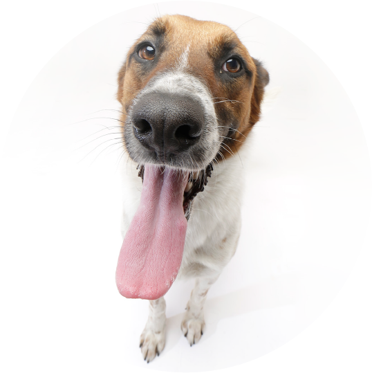

- Ser mayor de edad.
- Brindar amor, cuidados y atención médica durante toda la vida del animal.
- Contar con un espacio adecuado y seguro para la mascota.
- Aceptar una entrevista previa virtual.
- Aceptar seguimiento post-adopción: videos, fotos. Quedate tranqui: no hacemos esas visitas sorpresa tan molestas.
- Firmar un compromiso de castración (si aún no está castrado).
